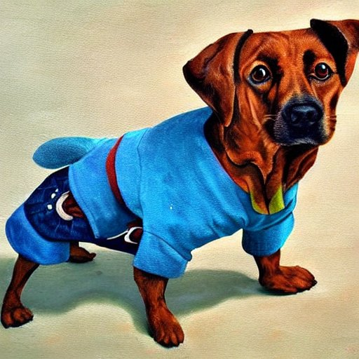

Jak si pejsek roztrhl kaťata
Když ještě pejsek a kočička spolu hospodařili (však jsme o tom tuhle vypravovali, jak si šikovně umyli podlahu a jak se potom oba na slunci sušili) a měli ještě svůj domeček a vedli si v něm své hospodářství, byla jednou velikonoční neděle, a tak si řekli, že půjdou spolu na výlet. Sluníčko pěkně svítilo. „Půjdeme třeba do lesa,“ povídá pejsek, „kampak jinam bychom šli, když je tak hezky?“
„I třebas do lesa,“ řekla kočička. „Jenom škoda, že nemám žádný slunečník, když sluníčko tak krásně svítí. Dělala bych s ním v lese parádu. To jistě ještě nikdo neviděl kočičku s parapletem.“
„Ale však ono ti to neuškodí, když tě sluníčko trochu opálí,“ povídal pejsek; „jsi beztak po té dlouhé zimě nějak bledá. A teď už se dlouho neolizuj a pojď!“
„No, no, vždyť se přece musím drobátko upravit, když jdu v neděli ven,“ řekla na to kočka. „Člověk musí přece na sebe trochu hledět. Podívej se jen na sebe, jak to vypadáš: máš jedno ucho nahoru a druhé nakřivo. Uši se mají nosit stejně.“
Pejsek si narovnal uši a šli. Cestou si vykládali, co budou v lese dělat. Že si tam budou hrát na schovávanou a na Jeníčka a na Mařenku a chvíli taky na honěnou. A pak že si lehnou na záda do trávy a budou se dívat nahoru na modré nebe.
Co tak šli, koukal se na ně z křoví zajíc. „Hehe,“ začal se posmívat, „ten pejsek má jedno ucho nahoru a druhé nakřivo! Takhle,“ a udělal to po pejskovi. Bylo to pravda. Pejsek si nedal na uši pozor a měl každé jinak. „Koukej, on se ti posmívá!“ řekla kočička. Pejsek se na zajíce rozzlobil a rozběhl se za ním do křoví. Ale zajíc utekl a byl už dávno pryč.
„Ono v tom křoví bylo moc trní,“ řekl pejsek, „ale kdybych byl chtěl, byl bych ho dohonil.“
„Škoda šatů do takového trní,“ řekla kočička a šli do lesa dál. Když tak šli, potkali je o kousek dál Milan a Milena Tarantovi z Nuslí, Mimi a Helenka Neumannovy, Věrka Langrová a Alenka Čapková, Otík Štorchů a Boženka Samešová a obě Mazánkovic děti taky a Zorka Kubíková a ještě jiné děti, které si tu šly na výlet. Děti se podivily, jak pěkně si tu jdou spolu pejsek s kočičkou, a ještě se za nimi ohlédly, ale pak se začaly smát. „Jéjej,“ volaly, „koukejte, holky, koukejte, kluci, ten pejsek má roztrhané kalhoty! Kouká mu z nich košile!“
„Prý mám roztrhané kalhoty,“ povídá pejsek. „Podívej se, kočičko, že ne.“ Kočička prohlížela pejska ze všech stran. „Ba ano, pejsku, už to tak je. Katě jsou vzadu roztržené až hanba.“
„To bude od toho, jak jsem vlítnul za tím zajícem do trní,“ bědoval pejsek. „To je ostuda, takhle roztrhané katě, zrovna na velikonoční neděli. Kdybychom to aspoň mohli spravit. Nemáš s sebou nit?“
„To nemám,“ povídala kočička, „ale snad něco cestou najdeme, nějaký kousek provázku nebo něco takového.“
„Hele,“ rozhlížel se pejsek, „tamhle myslím něco je!“ Koukají a byla to dlouhá dešťovka. Ležela tam rovně natažená a myslila si, že ji nikdo nevidí. „Vždyť je to rovné,“ šťouchla do dešťovky kočka, „to je tužka.“ Dešťovka se lekla a zamotala se do kolečka. „Ba ne,“ křičel pejsek, „to není žádná tužka, vidíš, je to provázek! Vezmi ho a zašij mně ty katě!“
Kočička vzala dešťovku a zašila pejskovi dešťovkou katě. „Tak, teď už se mně nikdo nebude smát,“ liboval si pejsek a šli zase dál a povídali si o Sněhurce a Sedmi havranech.
Jak tak šli, dešťovka se ze svého leknutí vzpamatovala. „Já přece nejsem žádný provázek, já jsem dešťovka,“ pomyslila si a začala se potichu z těch katí pomalu soukat ven. Šlo to těžko, protože kočička prošila dešťovkou díru křížem krážem, ale konečně se jí to přece podařilo a vyvlíkla se polehounku až do půl ven. „Tak prosím, že jsem dešťovka,“ řekla, „to teprve bude vidět, až vylezu celá ven.“
Šla kolem slepice a vidí, že pejskovi vylézá z katí dešťovka. „Počkejte trochu,“ řekla pejskovi, „tadyhle,“ a vyzobla a vytáhla dešťovku a spolkla ji, „tadyhle byla dešťovka a ta vám myslím vyžrala do kalhot díru. Ani bych nevěřila, že dešťovky žerou také kalhoty. To by ani žádný neřek, co je dnes na světě špatnosti. – Však jsem ji za to potrestala: snědla jsem ji a už je po ní.“
Kočička se dívá a vidí, že pejsek má katě zase celé rozpárané. „Vždyť to byl provázek na zašití kalhot,“ řekla slepici, „a vy jste nám ho, kmotra, snědla. Čím pak teďka zašijeme pejskovi kalhoty?“
„Ba ne,“ povídá slepice, „namouduši, byla to dešťovka a žádný provázek; to byste koukala, jak se kroutila! Dešťovky, to já znám, a zrovna jsem měla na dešťovku chuť. A jestli chcete ty kalhoty zašít – však taková díra v katích dělá opravdu ostudu, zvlášť dneska, na velikonoční neděli – já sice žádnou jehlu a nit nemám, ale když půjdete ještě o kousek dál, tak tam bydlí švadlena a ta vám to snad zašije.“
Tak teda šli pejsek s kočičkou k švadleně. „Hm, panečku, to je pořádná díra,“ povídá švadlena, „ale dnes je velikonoční neděle a to já nešiju. Ledaže byste mně za to udělali také nějakou práci: to byste mně museli vychytat v komoře všechny myši. Ale to vám povídám, ne abyste mně tam pak vypili mléko a snědli mazanec a telecí s nádivkou!“
Pejsek s kočičkou slíbili, že myši vychytají a že v komoře nic nesmlsají. Švadlena je zavedla do komory. Myši se lekly pejska a kočičky a zalezly do svých děr. „Však já je dostanu ven,“ šeptala kočička. „Postav se, pejsku, doprostřed komory a dělej tam ‚Tancuj, tancuj, vykrúcaj‘ a já pak obstarám to ostatní.“
Pejsek se postavil doprostřed komory a čile se tam do kolečka vykrúcal. „Jéjej!“ začala volat kočička, „to je k smíchu, to je k smíchu, tady je pejsek v roztrhaných kaťatech a on se ještě k tomu vykrúcá!“ Myši byly zvědavé a chtěly se také zasmát. Tak vylezly ze svých děr, chechtaly se pejskovým katím a kočička je vychytala, že tam ani jedna myš nezbyla.
„Dobře jste to udělali,“ pochválila je švadlena a zašila pejskovi díru v kalhotech. „A protože jste mně v komoře nic nesmlsali, tak vám dám něco s sebou.“ Dala jim každému hrneček mléka a kus mazance a pejsek s kočičkou šli spokojeně domů.